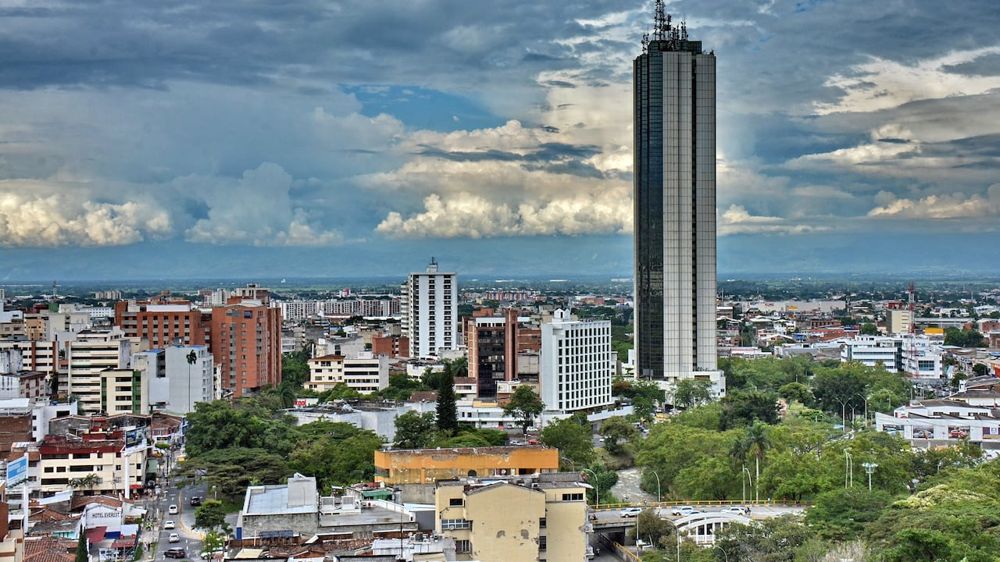
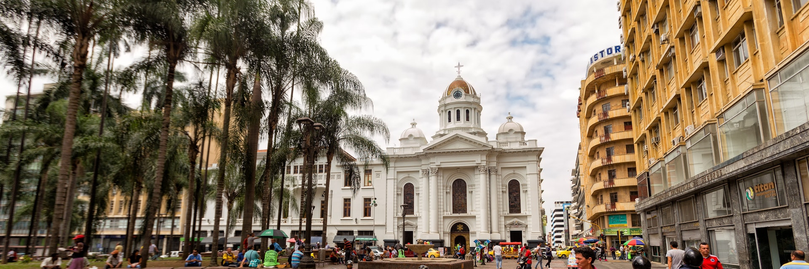

Cali es una ciudad ubicada en el departamento del Valle del Cauca, al suroeste de Bogotá. Es conocida por el baile de la salsa, del que hay muchos clubes en el suburbio de Juanchito. En el barrio más antiguo de Cali, la catedral neoclásica de San Pedro alberga pinturas de la Escuela de Quito. Cerca está el Complejo religioso de San Francisco de los siglos XVIII y XIX. La Capilla La Merced es donde se ofició la primera misa después de la fundación de Cali en 1536.
Al encontrarse al norte del Valle de Cauca, la ciudad de Cali tiene un clima principalmente tropical, caracterizado por ser cálido y seco. En Cali, la temperatura promedio es de 24 grados centígrados, según el Instituto de Hidrología, Meteorología y Estudios Ambientales